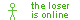

There isn't much to warn about the 'extras' page lol. Anyways this page will contain things like videos I love on youtube, things from my fandoms, a devlog that contains updates, graphics I liked but couldn't add since it wasn't relevant, and more, hence why it's called beyond.
There isn't much to warn about the 'extras' page lol. Anyways this page will contain things like videos I love on youtube, things from my fandoms, a devlog that contains updates, graphics I liked but couldn't add since it wasn't relevant, and more, hence why it's called beyond. 
Deceptacon Le Tigre
Schuyler Defeated (Off Broadway)
4K Carpet
The Mind Electric Demo Hawaii Part II
Aaron Burr, Sir
Alexander Hamilton
Non-Stop
The Schuyler Sisters
Dream On (Aerosmith and the only aerosmith song I thought to put lol)
Armed (heelflip)
BANG BANG BANG 
Big Juicy (AYESHAAAAA)
Buttercup (Jack Stauber)
Pepper (Butthole Surfers)
Cigarette Ahegao (Penelope Scott)
Dead Girls (Penelope Scott)
Pumped Up Kicks (Foster The People-and yes I listen to this unironically)
FUKOUNA GIRL (STOMACH BOOK)
How To Never Stop Being Sad
I'm so crazy for youuu (Rebzyyx)
I Just Threw Out The Love Of My Dreams (Weezer)
Inanimate Object (Fried By Fluoride)
No Wind Resistence! (Kinneret)
Haunted (Laura Les)
Nope your too late i already died
mirrors demo (overtonight)
Need 2 (Pinegrove)
Pretty Scene Girl! (Clover!)
misery (pupsies)
all i want is you (Rebzyyx)
masquerade (siouxxie)
Sleep Patterns (Merchant Ships)
The Bitch Of Living (From The Musical: Spring Awakening)
stalk ur socials (s0rrow)
MakeDamnSure (Taking Back Sunday)
Buddy Holly (Weezer)
Go Away (Weezer and Best Coast)
Wet (Dazey and the Scouts)
spy? (WHOKILLEDXIX)
I'll Believe In Anything (Wolf Parade)
Anthems For a Seventeen Year-Old Girl (yeule)
zeroday (heelflip)


 PICK A RANDOM VIDEO
PICK A RANDOM VIDEO